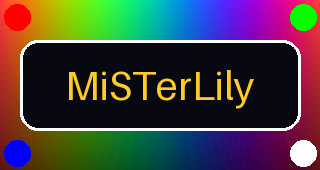
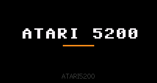
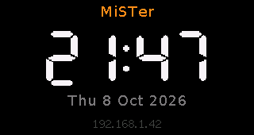

The core you are playing, on a screen inside the case.
MiSTerLily turns a LILYGO T-Display-S3 into a colour status display for MiSTer FPGA. Load a core and its logo appears; open the menu and you get a clock.
What it shows
Every core change is a new screen. A colour picture if you made one, otherwise one of the 1,776 core logos from the tty2oled library, otherwise the core’s name in the Commodore 64 font tty2oled has always used.



How it connects
One USB cable carries power and data. A small program on the MiSTer watches for core changes and sends the right picture; the board draws it. Nothing in the FPGA cores changes, and no Wi-Fi is involved.
Built on tty2oled
MiSTerLily would not exist without MiSTer_tty2oled by venice1200 and ojaksch. The serial protocol, the picture library and the idea of a small display that follows your core all come from there.
The board speaks the tty2oled protocol, so the original tty2oled daemon drives it as it is, in grey. The MiSTerLily daemon adds colour pictures, the clock and automatic reconnection, and still uses the tty2oled pictures. Same licence too: GPL-3.0.
Install
-
Flash the board
From a computer with PlatformIO, over the board’s USB-C port. No buttons needed.
git clone https://github.com/alberthorta/MiSTerLily cd MiSTerLily/firmware pio run -t upload -
Install on the MiSTer
Build the one-file installer, copy it to
/media/fat/Scripts(or to theScriptsfolder of a fresh Mr. Fusion card) and run misterlily_install once from the Scripts menu.python3 tools/make_mister_installer.py # then copy dist/misterlily_install.sh to the MiSTer -
Get the logos
Run misterlily_update from the same menu. It downloads the tty2oled logo library and, whenever you run it again, updates MiSTerLily from GitHub.
Your own pictures
Put a PNG or JPEG named after the core in /media/fat/MiSTerLily/art: PSX.png, SNES.png, Genesis.png. It wins over the library logo from the next core change on. The name is the one MiSTer writes to /tmp/CORENAME.
MENU.png replaces the clock, and STARTUP.png becomes the start-up picture. A converter fits any image to the screen:
python3 tools/convert_asset.py photo.jpg art/SNES.pngHardware
| Board | LILYGO T-Display-S3 (touch or non-touch), not the AMOLED version |
|---|---|
| Chip | ESP32-S3R8, 16 MB flash, 8 MB PSRAM |
| Display | 1.9″ ST7789 IPS, 320 × 170, 16-bit colour, 8-bit parallel bus |
| Connection | USB-C to any MiSTer USB port or internal hub; USB CDC, 303a:1001 |
| MiSTer side | Python 3 daemon, tested on Linux; tty2oled’s own daemon also works |
| Licence | GPL-3.0 |